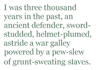

I was in Greece to show a king he shouldn’t have committed suicide. It was sunny mid-September, the right-shoulder-end of the high season, and what I had calculated to be the anniversary of his death.
The bow of the ferry pitched forward suddenly and I almost lost my grip on the flag. The white standard continued to flutter in the mild afternoon breeze. I felt proud, important, a messenger carrying news that would finally be delivered. I was three thousand years in the past, an ancient defender, sword-studded, helmet-plumed, astride a war galley powered by a pew-slew of grunt-sweating slaves. Ready the catapult, the cauldrons! Ignite the arrows! How many had gone down in their armor, unable to raise even an arm to signal for help as they shot into the deep? The rear of the galley rising to the gods, the oars all akimbo like the legs of some giant manic spider before slipping through the sheet of darkness. Fires on the water, night clangs and cries, screams and splashes. The average body takes several days to disintegrate in the open deep, a wood-fashioned war galley even longer. But just how long? I would have to search the Internet again.
“Must’ve hit a swell,” said the woman by my side.
“Or a sea monster”: her husband’s response.
This couple had sat near me during most of the overnight journey. The husband had worn a t-shirt that claimed Boston was founded in 1630. The woman had worn a visor and sunglasses inside and when an overly large family of Gypsies overtook our room, coming in loud and ready to lay their blankets down and start cooking and feasting, the couple got up and took off for areas unknown.
The husband noticed me staring at his wife’s binoculars.
“May I borrow your binoculars?”
“Of course,” she said and handed them over.
“Thank you kindly.”
With one hand still on the flag I raised the binoculars and peered through them to the shining city on the hill. My focus went to the Acropolis, to the figures swirling about like so many seeds tossed to the wind. I scoured and swiveled, my view bobbing, and then I saw him. There, standing at a corner of the Parthenon, his arms open wide to the sea.
I handed the binoculars back to the woman and with both hands lifted the flag high. I swept it back and forth, across the blue, and the announcement came on that we were preparing to dock.
“Tell me you’re not signaling the terrorists.”
The man looked at me expectantly. He wore a Club Med t-shirt now.
“What do you mean,” I said, allowing the flag to falter a little.
“I’m saying that better not be a signal for al-Qaeda in Athens.”
“Bob,” the woman warned.
“But it’s not,” I said. “It’s a signal for King Aegeus.”
“King who?”
“Aegeus, the king of this city. This water we’re on is named after him. I’m here to help him discover the good news.”
The couple clutched one another and drifted away. I went back to waving the flag.
When the ferry had docked and the drawbridge had dropped to dry land I charged with all the other passengers across to the waiting taxi drivers and hotel touts. The first one to extend a hand got me.
In the cab I asked the driver if we could possibly go any faster.
“You want faster? This is faster.”
“Okay,” I said.
“You want real faster. Real faster costs extra.”
Outside the cab, close to the entrance to the brightest hill of them all, the driver tried to convince me that my laptop and suitcase, since they’d been stored in the trunk on our way through the city, cost an extra service fee. I wasn’t buying.
“Desist, my friend, or I’ll report you to the nearest youth hostel.”
Confused by my sentence, the driver blew air in my face, got back in the cab and drove away. I was again at a loss.
I walked up the cobbled — could they be called cobbled? — steps, past what I assumed were olive trees, to stand in front of the gate that led into the magnificent Acropolis. As I was passing through the maw of the gods I heard a voice, short and sharp: “Your ticket, sir. Excuse me, your ticket.”
I seem to have this problem when I travel. Call it excitement, call it hubris, call it whatever you will, whenever you will, but it does happen that the conclusion of the mission is in my mind before it becomes a reality, the steps fall away, forgotten, and it’s like I’ve tried to build a house from the roof down. Humbled, I paid the sufficiently exorbitant amount, got back in line and this time entered without incident.
The ancient grounds of the gods were no less crowded now than when I had first espied them from my vantage point on the ferry. Wicked, wicked tour groups kicked rocks randomly in wing formation. An elderly couple asked me to take a photo for them, of them, which would then be placed in their hometown newspaper and guarantee them a prize. I felt special. I felt cheap. I wanted it to be over, but it was never going to be over, not until I had found and helped them all, and that was impossible, the ending of that feat, like the thirteenth labor of Hercules.
It took a while to find him, but there he was, on the far side of the Acropolis opposite the entrance steps. A crowd of Danes had gathered near him to gawk at the mix of countryside, city and ruins below, but they dispersed as I drew near and by the time he had turned to face me we were alone. Standing well over six feet, he wore a long maroon tunic, sandals and a belt made from the hide of a black boar. His eyes were wet and he looked so old and frightened, like someone I had known for a short time before taking off with her money. His white hair was curled in great tufts surfing back from his scalp, and his beard shook with rattled emotion. It was him. It was Aegeus.
“I’ve traveled half the world to speak with you,” I said as I set down my laptop, suitcase and daypack. “I’m here to help you, to show you what actually happened so that what did happen didn’t have to happen. It’s my job, my mission.”
He screamed then — a sound so ghastly and booming that I just had to crouch low and cover my ears the way you would if you were visiting an ancient hilltop castle near Aix-en-Provence and the wind had picked up something merciless threatening to topple you and your compatriots off the rampart wall to your death fifty or more feet below.
His maw still gaping, his vocal chords still a-whirring, Aegeus threw his head back as if he were going to swallow the freaking sky. His fists clenched and unclenched, and his eyes — from what I could see of them anyway — looked ready to bleed. I guessed this was what it must have been like to suffer a Greek tragedy.
When the bleating had subsided I stood up and looked around. If there were others on that field of battle then, I did not see them. I turned to face my foe and soon-to-be-friend.
“That was...dramatic.”
He swayed toward me, his arms outstretched. I fell into his embrace and closed my eyes, my nostrils picking up the pungent and familiar scent of dead goats and sea salt. After some time we let go, tears in both pairs of eyes.
I asked him where his crown was.
“Crown?”
“Don’t give me that. You understand the word. You understood the word ‘your’, the word ‘where’. You certainly understand the verb ‘be’.”
“The most powerful verb in the English language,” Aegeus said.
“Good. Then we can dispense with the whole ‘I don’t understand your language, you don’t understand mine’ shtick. The Internet transcends language anyway.”
“Internet?”
“Now that I can understand. Allow me to explain: The Internet is my employer. It’s essentially one big company run by... by someone, someone powerful, like any other big company in the world. It’s what brought me to you. I’ve been working under its guidance to find lesser-known famous people and either make them more famous or…well, help them in some way. To show them what they’ve missed, and what can be.”
Aegeus got down on his knees and pawed the earth. He looked about ready to chew dirt when he cried out, “My son, my son, my son...”
“Your son was alive, Aegeus. Alive!”
“Alive?”
“Yes, alive. Look!”
I sat on the ground next to the king and took my laptop out of its carrying case. I opened the clamshell and hit the power button. The sound of my god echoed across the plateau.
Aegeus scooted closer to me and I put the laptop between us. “See,” I said, dragging and clicking here, typing a little there. “Check out this website. See what it says? You can read this, right? The screen’s not too dark for you?”
The king, his face pinched with concentration, puffed with emotion, said nothing. I went on.
“Okaaay…I see we’re having one of those daytime television talk-show moments. That’s okay, really. Take your time. I’m patient.”
When considerable time had passed and Aegeus still had not said or done anything, I tried to encourage him: “You just gotta hang with this technology for a while. You’ll figure it out, and you’ll thank me, really you will. Theseus is everywhere on this thing. All you have to do is type in his name and — ”
“He is in here.”
“Sure.”
“Trapped!”
“Not trapped. He’s just…you know, there. All right. That’s it…”
The king had taken my computer from me and placed it in his lap. His fingers hovered over the keys. He looked prepared to type. I watched, anxious. Then quite abruptly he hit the power button. The computer shut off.
“No! Not that button. Christ. Here, let me….”
But the king held tight. After some tense wrestling, I at last succeeded in taking back what was mine. Angry now, I said, “You should’ve listened to the Oracle: ‘Do not loosen the bulging mouth of the wineskin until you have reached the height of Athens, lest you die of grief.’ But you did get drunk, and while drunk you sired Theseus, and because of your son you actually did die of grief.”
He didn’t seem to understand so I said, “Look, Goat-man. If you don’t want to take the time to surf the Web and learn the truth, fine. I’ll just say it. You made a mistake. A big, unqualified mistake. You might have seen the sail black on your son’s ship as it appeared on the horizon, but that didn’t mean he was dead. Didn’t mean he failed.”
“He...”
“He was alive, Aegeus. What did I say earlier? He’d just forgotten to change the sail, black to white. A simple mistake that cost you your life.”
“My son...forgot.”
“Forgot like all the other things he forgot with you. Forgot to throw the ball around. Forgot to build a tent fort in the backyard. Forgot to take off the training wheels. Forgot to count fireflies on the porch in summer. Forgot to call you from his friend’s house that one time, remember? Remember?”
“I — ”
“Forgot to say he loved you before he left Athens with that black sail up, didn’t he? Didn’t he?”
“Yes!”
“That’s it! Get mad! Get damnright angry at the kid! Come on! I know you can do it, so.”
Aegeus reared his head back and screamed yet again, this time beating his chest in tune to his vocal chords.
“That’s it...let it out. That’s a king.”
With the shaking of his head Aegeus seemed to shake out the last of his anger. He sat back on his palms.
I said, “Your son was a neglectful and emotionally reckless youth. Do you know what he was doing on his way back from killing the Minotaur?”
“He...succeeded?”
“He more than succeeded. His quest was a triumph. Like I said before he slew the Minotaur, that foul half-man half-bull beast, in its own maze. Tore off its left — or was it the right? I’ll have to search that — horn and drove that newly-formed spear straight through the monster’s heart, thus freeing the six Athenian men and seven Athenian maidens who were waiting to be sacrificed. He then, cad that he was, took off with King Minos’s daughter, Ariadne. Together they sailed in Theseus’s ship bound for Athens and you.”
“This is not a lie?”
“Not even a little white, man. Here. You can see for yourself. I’ll give you one more go at it.”
I passed the laptop off to the king. He took it in his grubby hands and stared at the screen, again apparently not knowing what to do.
“Go on. Type something. You’ve watched me do it, I got you set up, how hard can it be? I really, really want you to do this on your own, Aegeus, without my help. You can do it, I know you can. So search, for the sake of the gods.”
As if touching a newborn pup, Aegeus pressed his pinky finger on the space key. My computer made a sound of annoyance.
“Not like that. You’re already on the search engine. All you need to do is type in your son’s name. Type in T-H-E-S-E-U-S, hit the ‘enter’ key, and you’re there. You’ll be reunited with him, in a way. At least you’ll learn all the things you should have before offing yourself. So go on. It’s easy. You don’t even have to put quotation marks around the search term.”
Aegeus hit the space key again, and again. I groaned.
“Obviously I’m going to have to do it all for you.”
But the king kept my computer at arm’s length from me. I couldn’t yet tell if he was treating it with distaste or reverence.
“Look,” I said. “At least listen to my instructions. Type in your son’s name, ‘Theseus’, and while you’re at it type in ‘Ariadne’ too. Yeah, you can find out all about them. He left her on the island of Naxos, can you believe it? Your own son had this fantastic woman and he went ahead and ditched her...who knows why? Some sites say the god Dionysus visited your son and told him Ariadne had already been promised to him, not Theseus, so Theseus had to abandon her on the island, for Dionysus. But if you ask me I think that’s bullshit. Your son was a womanizer. A user more than an abuser. You must have seen that in him at a young age, right? Go on. Tell me about the time he — ”
“There was no time,” Aegeus said. “Not ever.”
“Nice. Very poetic. But let’s face some reality here, huh. In essence he murdered you. His negligence did anyway. And did he grieve when he found out you’d thrown yourself off the highest cliff into the sea? Sure, he named the sea after you, but did he grieve, I mean really?”
“Um...”
“Well, what do you think?”
“He must have, my son.”
“I’m your son now, Aegeus. The son you should always have known.”
I made to touch the king affectionately, the way Theseus should have done all those years ago, but just as my fingers were about to land on his skin Aegeus leaped to his feet, the laptop still in his hands, and took off running across the Acropolis grounds.
“Come back! Jesus, somebody stop him! The king’s got my two-thousand-dollar laptop!”
I chased him down the side of the shining hill, along switchbacks too severe to return up. He took me into a dense grove of olive trees, where the cicadas cried even though summer was spent, and then into a cave bearing the Cyclops’s eye. At all times was he just ahead of me and I, like Tantalus in the pool of water, could not touch him, the fruit.
At last the tunnel opened out onto an edge of a cliff — the same cliff, I realized, from which King Aegeus had thrown himself upon seeing the black sail flying from his son’s ship.
“Return to your true father, my son!”
I had no time to react before Aegeus threw my laptop, my most prized possession, light of my love, my life itself, off the cliff to where it smashed onto the rocks and sank in pieces into the sea below.
“FUUUUUUUUUUCK!”
I jumped at Aegeus and landed solidly on his back. I dug my fingers into his eyes, covering them, gnawing at them with my nails. He spun around one way then the other, trying to throw me off. We hovered perilously close to the edge.
“Cretin!” I said. “Neanderthal! This is why I should never hit up people who died before the Industrial Revolution!”
He wrenched my hands from his face and forced me off him. Still holding my forearms he pulled me closer to the edge. Rocks gave way and I began to slip.
“No!”
My life appeared to be lost, and then. And then I swept my feet out from under myself, taking all weight off me and unbalancing the king, who pitched forward and toward the edge on which I had previously been teetering. As the king pitched forward I slid under his tunic, in between his legs, and let go of his hands in haste. Aegeus, surprised at the move that would have made his son proud, somersaulted into space. With a startled cry of terror he vanished from view.
I crawled to the edge and looked down. The king’s body had broken on the rocks and was slowly being borne up by the waves, then back down to be swallowed in the churning, bloody froth.
After taking a breath I shouted, “That’s what you get when you fuck around with the twenty-first century, old timer. Ha!”
For a time I sat at the entrance to the tunnel and watched the sun and sea. I wept for my computer, my laptop, my constant companion. But I would get another. I had money and, as someone once close to me often said, Any problem can be solved with money. There would always be more. More computers, more money, more kings and more cliffs. These thoughts consoled me and brought me back to believing that I could go on with my journey, my epic string of searches. After getting a new laptop, of course.
I stood up, resolved, and entered the tunnel. I did not wish to see night fall.